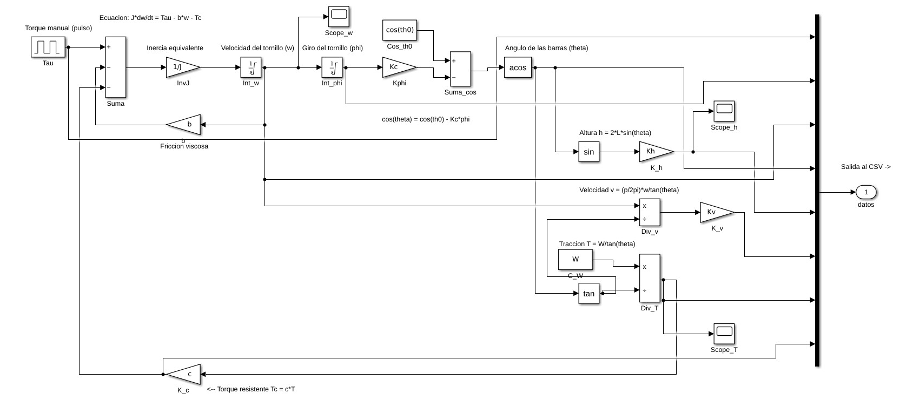
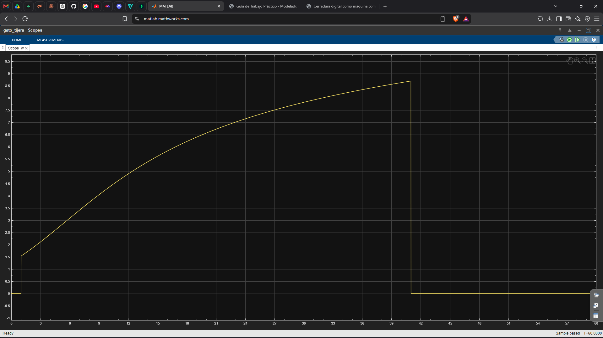
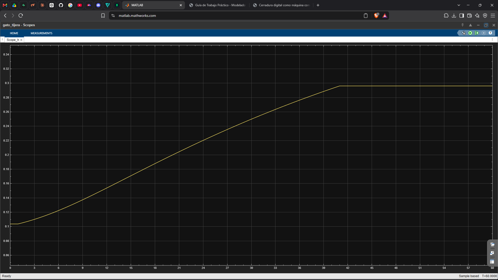

Gato tijera como máquina compleja
Componentes, analogía y modelo matemático del gato del kit de carretera: la máquina que levanta 400 kg con una mano.
¿Qué es una máquina compleja?
Sistema formado por dos o más máquinas simples conectadas. Trabajan de forma coordinada para lograr lo que por separado no podrían.
La salida de una máquina es la entrada de la siguiente. Su ventaja total es el producto de las ventajas parciales.
¿Qué es un gato tijera?
El del kit de carretera. Con una sola mano sobre una manivela levanta una fracción considerable del carro: algo imposible a pulso.
El secreto no está en una pieza, sino en encadenar tres transformaciones:
GIRO DE LA MANIVELA → AVANCE DEL TORNILLO → ELEVACIÓN DE LA CARGA
¿Por qué es una máquina compleja?
Porque combina tres etapas en serie: la salida de una alimenta a la siguiente. Cada etapa multiplica la fuerza y, a cambio, pide más recorrido.
MANIVELA
Palanca de 30 cm donde la mano aplica el esfuerzo.
TORNILLO
Plano inclinado enrollado: avanza 3 mm por vuelta.
ROMBO
Cuatro barras de 20 cm que abren y cierran.
Subir 26 cm cuesta 72 vueltas: lo ganado en fuerza se paga en desplazamiento.
Elementos y subsistemas
MANIVELA
Recibe el esfuerzo de la mano.
TORNILLO TR12×3
Convierte el giro en tracción.
APOYO
Deja girar al tornillo sin avanzar.
TUERCA
Se desplaza y tira del vértice.
ROMBO
Cuatro barras iguales de 20 cm.
BASE Y CABEZA
Suelo, punto de carga y 400 kg.
Analogía con ingeniería de sistemas
La lógica del gato tiene un paralelo directo: concentrar recurso para amplificar capacidad, pagando un costo. Es la idea del escalado vertical.
EN EL GATO
Unos 60 N de la mano entran por la manivela; el tornillo y el rombo los convierten en 14.6 kN de tracción que levantan 400 kg.
El costo: 72 vueltas y el 63 % de la energía en calor. Y hay un techo: entre 15° y 65°; fuera, topes.
EN SISTEMAS
Una petición entra a un servidor; aumentarle RAM y CPU le permite atender más carga con el mismo nodo.
El costo: mayor precio, más consumo y límite físico. Pasado cierto punto ya no escala, por más hardware que se añada.
Modelo matemático: 4 ecuaciones
Cada ecuación representa una transformación de la cadena física: del giro que pone la mano a la fuerza que levanta el carro.
EC. 1 · GIRO
Del giro del tornillo al ángulo del rombo.
EC. 2 · ALTURA
Del ángulo a la altura de la cabeza.
EC. 3 · FUERZA
De la carga a la tracción del tornillo.
EC. 4 · GIRO
Del torque de la mano al movimiento.
Ecuación 1 · del giro al ángulo
Cada radián que gira el tornillo cierra un poco el rombo: el ángulo se lee directo del giro, sin variables nuevas.
Ecuación 2 · del ángulo a la altura
Geometría pura: con el gato cerrado la cabeza está a 10 cm; abierto, a 36 cm.
Ecuación 3 · de la carga a la tracción
Es la relación clave: aquí nace la multiplicación de fuerza del rombo… y su costo.
Ecuación 4 · la mano contra la carga
Segunda ley de Newton para rotación sobre el eje del tornillo. Si la mano pone menos de 18.9 N·m, el gato ni arranca.
Modelación en Simulink
Las 4 ecuaciones, armadas con bloques básicos: la fila superior resuelve el giro, a la derecha se calcula el ángulo y abajo salen altura, velocidad y tracción.

Resultado 1 · la subida
Con 22 N·m entre t = 1 y t = 41 s. Capturas directas de los Scope de Simulink.
Scope · VELOCIDAD ω [rad/s]

Crece de 1.6 a 8.6 rad/s porque la carga se aligera al abrirse; al soltar (41 s) cae a cero.
Scope · ALTURA h [m]

De 0.104 a 0.296 m y se queda fija: al soltar, el tornillo se autobloquea.
Resultado 2 · a mano y simulado coinciden
En t = 20 s se calculó todo a mano con las ecuaciones y se comparó con la simulación:
| MAGNITUD | A MANO | SIMULACIÓN | |
|---|---|---|---|
| Torque resistente τc | 8.87 N·m | 8.87 N·m | ✓ |
| Velocidad del tornillo ω | 6.56 rad/s | 6.56 rad/s | ✓ |
| Altura h | 0.198 m | 0.198 m | ✓ |
| Velocidad de subida v | 5.5 mm/s | 5.5 mm/s | ✓ |
Ritmo creíble de gato manual (4 a 5 mm/s) y retención total al soltar: el modelo cierra.